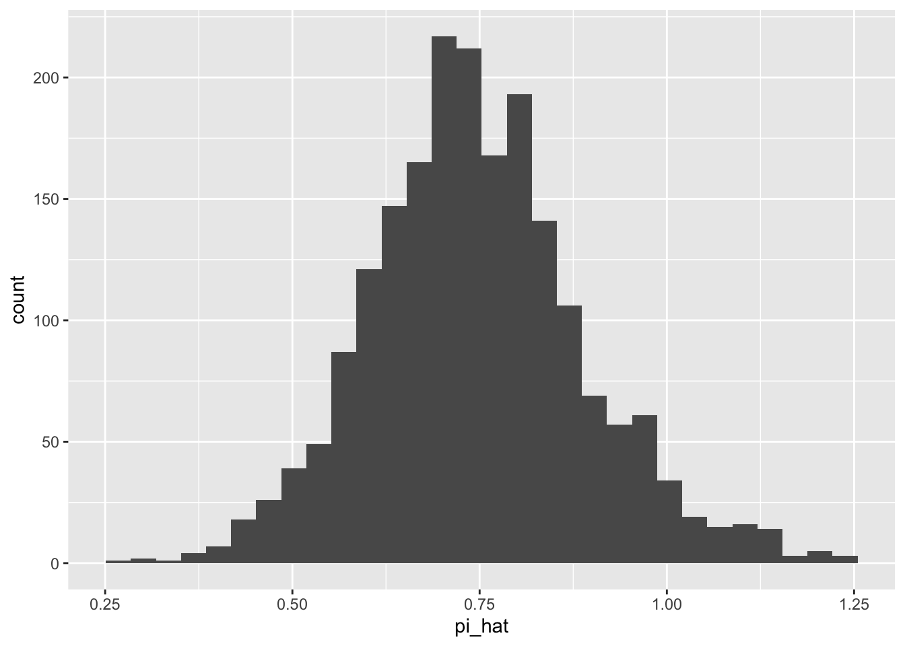
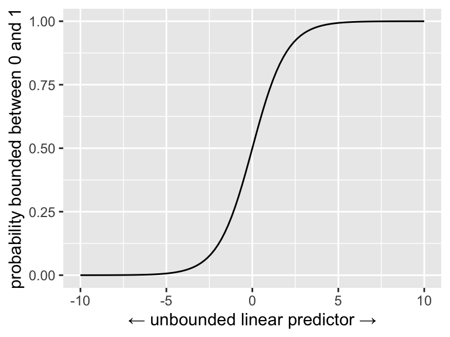
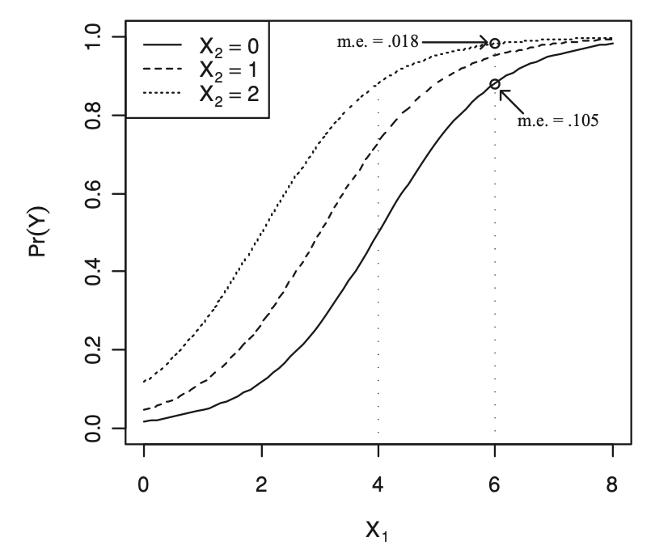
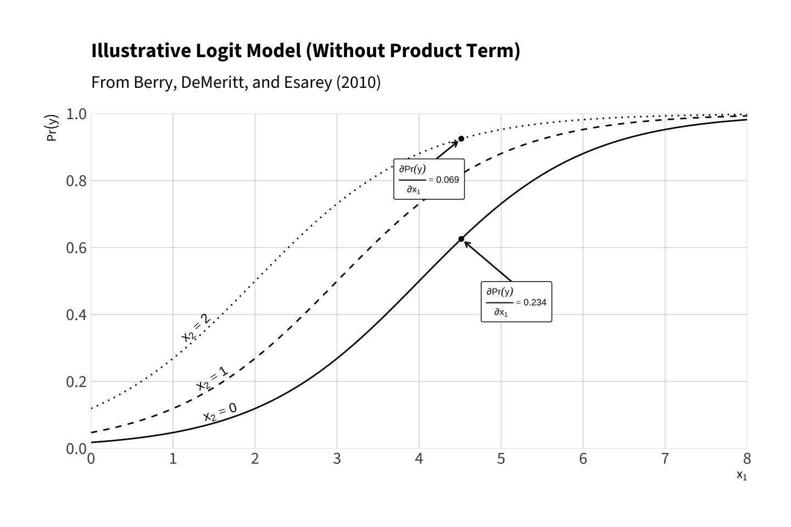
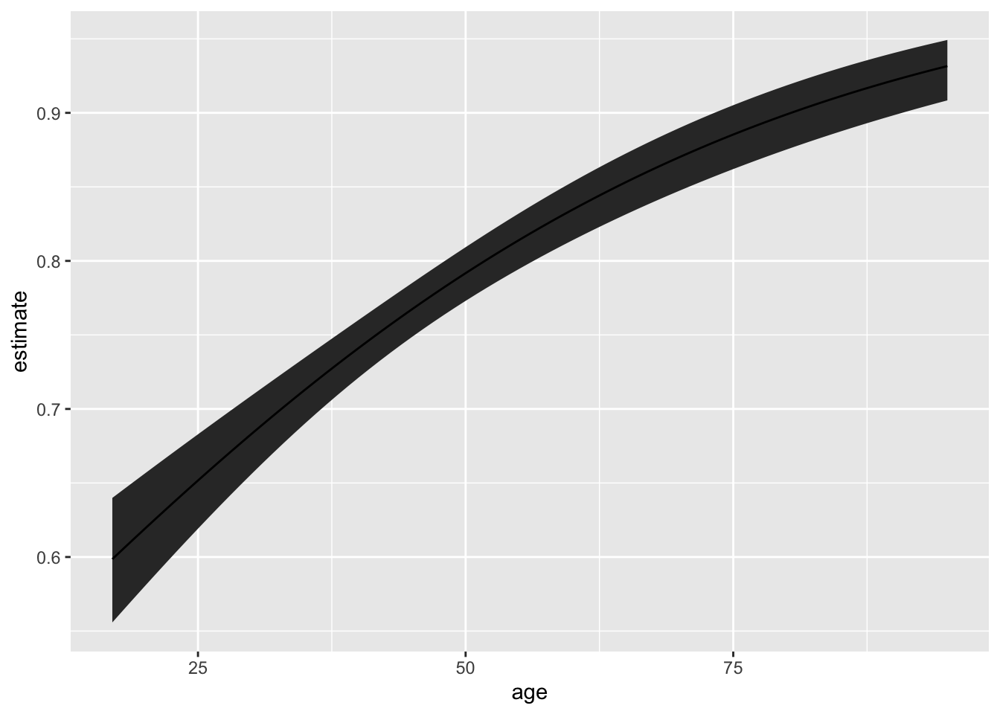

In the case of the normal model, we used \(y_i \sim N(\mu_i, \sigma^2)\), where \(\mu_i = X_i\beta\). The normal model does a great job with roughly continuous outcomes like ENEP.
But sometimes we care about binary outcomes.
Binary outcomes are categorical outcome variables with exactly two categories, such as whether or not someone voted, whether two countries are at war, and so on.
In mathematical theory, it’s helpful to code the binary variables as \(y_i \in \{0, 1\}\), with one representing “an event” and zero representing “a non-event.” In R, it’s probably better to have proper factors and labels, though the 0/1 coding is common and works well.
In generic language, we’ll say that \(y_i = 1\) means that “an event has occurred” and \(y_i = 0\) means that “an event has not occurred.”
This allows us to talk about the “probability of an event” (e.g., the probability of war, etc)
11.0.1 The Linear Probability Model
The normal model cannot describe a binary outcome well, becasue it doesn’t make much conceptual sense to model 0s and 1s as following a normal distribution. That said, we can use the linear model (i.e., OLS) with binary outcome variables.
Recall that we the linear model is represented by the equation \(E(y_i) = X_i\beta\).
It is important to note that a probability is just a particular kind of expected value—a probability is an expected value of a binary variable.
Since \(y_i\) is binary, the \(E(y_i) = \Pr(y_i = 1) = \Pr(y_i)\), giving us \(\Pr(y_i) = X_i\beta\).
The LPM has two advantages:
It’s is very easy to estimate (i.e., OLS; \(\hat{\beta} = (X'X)^{-1}X'y\)).
It is easy to interpret (i.e., a one unit change in \(x_j\) leads to a \(\hat{\beta_j}\) unit increase in \(\Pr(y)\)).
The LPM has several disadvantages:
Unbounded Predictions Because the potential values for the explanatory variables are unbounded, you can obtain predicted probabilities above one and below zero. Of course, these predictions make no sense.
Conditional Heteroskedasticity The normal-linear model assumes a constant variance \(\sigma^2\). However, it is impossible to have homoskedastic residuals of a binary outcome if the probability of an event varies. Specifically, if \(y_i\) is binary, then \(\text{Var}(y_i) = \Pr(y_i)[1 - \Pr(y_i)]\), which, for the LPM, equals \(X_i\beta(1 - X_i\beta)\). (Non-zero coefficients imply heteroskedasticity.)
Non-Normal Errors Normal errors implies that the residuals can take on any value along the real line, with values closer to zero being more likely and errors outside three standard deviations being quite unlikely. However, if \(y_i\) is binary, then the residual can take on only two values: \(-Pr(y_i)\) or \(1 - Pr(y_i)\).
Functional Form Theoretically, you’d probably expect explanatory variables to have smaller effects as \(Pr(y_i)\) approaches zero or one (called “compression,” see Berry, DeMeritt, and Esarey (2010) and Rainey (2015)). The LPM assumes that the effects are constant.
Rainey, Carlisle. 2015. “Compression and Conditional Effects: A Product Term Is Essential When Using Logistic Regression to Test for Interaction.”Political Science Research and Methods 4 (3): 621–39. https://doi.org/10.1017/psrm.2015.59.
11.1turnout data set
As an intial simple example, let’s use the turnout data set from the old {Zelig} package. {Zelig} has been replaced with {clarify}, but thankful jrnold saved Zelig’s example data in the package {ZeligData}.
# install jrnold's package from githubdevtools::install_github("jrnold/ZeligData")# load only the turnout data frameturnout <- ZeligData::turnout # see ?ZeligData::turnout for detailsglimpse(turnout)
We can fit use use least squares to fit a linear probability model to these data, treating the binary 0/1 vote variable as numeric.
Because we now have a response y and a design matrix X we have to be a little careful that the handling of y and X are consistent (e.g., dropping rows with missing data). Using model.frame()before using model.matrix() is the proper way to do this. The canonical pipeline is to feed the formula and the data frame through model.frame() → model.matrix() → model.response().
# fit linear probability modelf <- vote ~ age + educate + income + race# make X and ymf <-model.frame(f, data = turnout)X <-model.matrix(f, data = mf)y <-model.response(mf)# ols, (X'X)^{-1}X'ybeta_hat <-solve(t(X)%*%X)%*%t(X)%*%ybeta_hat
[,1]
(Intercept) 0.053049343
age 0.004399049
educate 0.028949444
income 0.022116248
racewhite 0.068393114
Or we can use lm().
fit <-lm(f, data = turnout)arm::display(fit)
lm(formula = f, data = turnout)
coef.est coef.se
(Intercept) 0.05 0.05
age 0.00 0.00
educate 0.03 0.00
income 0.02 0.00
racewhite 0.07 0.03
---
n = 2000, k = 5
residual sd = 0.41, R-Squared = 0.11
We have modeled \(\pi = X\beta\), so we can compute \(\hat{\pi} = X\hat{\beta}\).
# mu-hatpi_hat <- X%*%beta_hat
This gives us some “unusual” probabilities.
summary(pi_hat)
V1
Min. :0.2594
1st Qu.:0.6521
Median :0.7378
Mean :0.7460
3rd Qu.:0.8318
Max. :1.2297
ggplot() +geom_histogram(aes(x = pi_hat))

11.1.1 The Logit Model
As an initial effort to handle the “non-normal” distribution of the data, we might then use the Bernoulli model \(y_i \sim \text{Bernoulli}(\pi_i)\), where \(\pi_i = X_i\beta\).
However, \(\pi_i = X_i\beta\) has a big problem: \(X_i\beta\) might be less than zero or greater than one. This renders the approach unworkable.
To suitably link the bounded parameter \(\pi_i\) and with the unbounded linear predictor \(X_i\beta\), we use the “inverse link function.” The inverse link function wraps around the linear predictor and forces its values into the desired domain.1
1 Many of the “disadvantages” of the LPM above follow from the fact that the linear predictor \(\mu = X\beta\) is unbounded. For the normal model, the inverse link function is not necessary because the parameter of interest \(\mu\) is unbounded and maps to the entire real line. But for other models, the key parameter has a restricted domain. In the case of the Bernoulli distribution, \(\pi_i \in [0, 1] \subset \mathbb{R}\).
2 This is not the only choice. Probit models, for example, use the standard normal cdf for the inverse link function.
3 It’s also the cdf of the standard logistic distribution.
4 We could equivalently talk about “link functions” rather than “inverse link functions.” The link function would expand the bounded parameter to the entire real line; the inverse link function compresses the unbounded \(X_i \beta\) into the parameter’s bounds.
For the Bernoulli distribution, we might use the inverse link function \(g^{-1}(x) = \frac{e^x}{1 + e^x}\).2 This is called the “inverse logit” and it has an “S”-shape.3 It’s job is to map \(X\beta\) into \([0, 1]\).4
We can plot the inverse logit to see how it works.
inv_logit <-function(x) { (exp(x))/(1+exp(x))}ggplot() +xlim(-10, 10) +stat_function(fun = inv_logit) +labs(x ="← unbounded linear predictor →",y ="probability bounded between 0 and 1")

Hint: The inverse-logit function is the cdf of the standard logistic distribution, so you can just use plogis() in R, rather than hard-coding the inv_logit() function I create above.
We can write the model this way.
\[
y_i \sim \text{Bernoulli}(\pi_i)\text{, where } \pi_i = \text{logit}^{-1}(X_i\beta).
\]
This is logistic regression or the logit model. We can fit this model using maximum likelihood.
11.1.2 Fitting with `optim()
To develop the log-likelihood of the logit model, we start with the Bernoulli likelihood from before.
\[
f(y; \beta) = L(\beta) = \prod_{i = 1}^{N}\pi_i^{y_i} (1 - \pi_i)^{(1 - y_i)}\text{, where } \pi_i = \text{logit}^{-1}(X_i\beta)
\] Taking the log, we have
logit_ll <-function(beta, y, X) { linpred <- X%*%beta p <-plogis(linpred) # pi is special in R, so I use p ll <-sum(dbinom(y, size =1, prob = p, log =TRUE))return(ll)}
The tricky part about using optim() here is not the log-likelihood function, but setting up X and y. The code below creates the outcome vector \(y\) and the matrix \(X\) of explanatory variables (with a leading columns of 1s).
We already made X and y above, so we can use optim().
par_start <-rep(0, ncol(X))opt <-optim(par_start, fn = logit_ll, y = y, X = X, # ← covariates! 🎉method ="BFGS",control =list(fnscale =-1))opt$par
Be skeptical of your code! Here’s the proper way to fit a logit model using glm().
fit <-glm(f, family = binomial, data = turnout)arm::display(fit, digits =4)
glm(formula = f, family = binomial, data = turnout)
coef.est coef.se
(Intercept) -3.0343 0.3260
age 0.0284 0.0035
educate 0.1756 0.0203
income 0.1771 0.0272
racewhite 0.2508 0.1465
---
n = 2000, k = 5
residual deviance = 2024.0, null deviance = 2266.7 (difference = 242.8)
We can write a nice function that takes a formula and a data frame.
# make function that fits beta modelest_logit <-function(f, data) {# make X and y mf <-model.frame(f, data = data) X <-model.matrix(f, data = mf) y <-model.response(mf)# create starting values par_start <-rep(0, ncol(X))# run optim() est <-optim(par_start, fn = logit_ll, y = y,X = X,hessian =TRUE, # for SEs!control =list(fnscale =-1),method ="BFGS") # check convergence; print warning if notif (est$convergence !=0) print("Model did not converge!")# create list of objects to return res <-list(beta_hat = est$par,var_hat =solve(-est$hessian))# return the listreturn(res)}# fit logit modelf <- vote ~ age + educate + income + racefit <-est_logit(f, data = turnout)print(fit, digits =2) # print estimates w/ reasonable digits
But the inverse link function makes our life considerably more complicated. In the linear model, the effect of a one-unit change in \(x_j\) was simply \(\beta_j\). This is no longer the case.
11.2.1 Effects are not constant
To see how the inverse link function changes things, we can take the first derivative of \(\pi\) with respect to \(\x_1\).
Recall that \(\pi_i = \mathrm{logit}^{-1}(X_i\beta)\). To keep this derivative simple, we’ll break it into three parts: (i) first, find \(\frac{\partial \pi_i}{\partial \eta_i}\), then find \(\frac{\partial \eta_i}{\partial x_{i1}}\), and then use the chain rule \(\frac{\partial \pi_i}{\partial x_{i1}} = \frac{\partial \pi_i}{\partial \eta_i}\cdot \frac{\partial \eta_i}{\partial x_{i1}}\).
The marginal effect of \(x_{i1}\) on the probability of an event is not constant. It depends on the value of \(x_1\) *and all the other \(x\)s*!
To see this clearly, we can assume the logit model \(\Pr(y) = \operatorname{logit}^{-1}(-4 + x_1 + x_2)\) and plot \(\Pr(y)\) as \(x_1\) varies for different values of \(x_2\). Notice that the marginal effect \(\frac{\partial \Pr(y)}{\partial x_1}\) varies *depending on the value of \(x_2\). Remember, there are no product terms in this model. However, the effect of the variables are interactive, at least on \(\Pr(y)\).
This figure is a variant Panel A of Figure 2 on p. 252 of Berry, DeMeritt, and Esarey (2010).


This figure illustrates that interaction arises even when the model has no product term. The model is \(\Pr(y) = \operatorname{logit}^{-1}(-4 + x_1 + x_2)\) with no \(x_1x_2\) term. Each curve plots \(\Pr(y)\) as a function of \(x_1\) for three fixed values of \(x_2 \in \{0,1,2\}\). Because the inverse-logit link compresses probabilities toward 0 and 1, the marginal effect of \(x_1\) on \(\Pr(y)\), \(\frac{\partial \Pr(y)}{\partial x_1} = \Pr(y)\bigl(1-\Pr(y)\bigr)\), depends on the value of \(x_2\). Points and labels indicate selected derivatives. For example, at \(x_1 \approx 4.51\) the marginal effect is \(\partial \Pr(y)/\partial x_1 \approx .234\) when \(x_2=0\) and \(\approx .070\) when \(x_2=2\).
11.2.2 Two Quantities of Interest
Given that the coefficients are directly interpretable, we can focus on other, simpler quantities of interest.
We have to core quantities of interest:
expected value\(E(y \mid X_c)\). The expected value of the outcome \(y\) given a particular, chosen covariate \(X_c\). Here, \(X_c\) is a \(1 \times (k + 1)\) row matrix that contains particular values for \(x_1, x_2, ..., x_k\).
first difference\(E(y \mid X_{hi}) - E(y \mid X_{lo})\). The first difference is the difference between two expected values. First, we find an expected value of the outcome \(y\) given a particular covariates \(X_{lo}\), where one covariate is set to a “low” value of interest. Second, we find an expected value given covariates \(X_{hi}\), where that same covariate is changed to a “high” value of interest and the others are left unchanged.
As possible, I borrow my language around “quantities of interest”, including “expected values” and “first differences” from King, Tomz, and Wittenberg (2000), which has been hugely influential in political science.
King, Gary, Michael Tomz, and Jason Wittenberg. 2000. “Making the Most of Statistical Analyses: Improving Interpretation and Presentation.”American Journal of Political Science 44: 341–55. http://gking.harvard.edu/files/abs/making-abs.shtml.
11.2.2.1 Expected value for a typical case
# create chosen values for X# note: naming columns helps a bit laterX_c <-cbind("constant"=1, # intercept"age"=median(turnout$age), "educate"=median(turnout$educate),"income"=median(turnout$income),"white"=1# white indicators = 1 )ev_fn <-function(beta, X) {plogis(X%*%beta)}# invariance propertyev_hat <-ev_fn(fit$beta_hat, X_c)# delta methodlibrary(numDeriv) # for gradgrad <-grad(func = ev_fn, # what function are we taking the derivative of?x = fit$beta_hat, # what variable(s) are we taking the derivative w.r.t.?X = X_c) # what other values are needed?se_ev_hat <-sqrt(grad %*% fit$var_hat %*% grad)
11.2.2.2 Expected value for many cases
# - use ev_fn() from above# create chosen values for XX_c <-cbind("constant"=1, # intercept"age"=min(turnout$age):max(turnout$age), "educate"=median(turnout$educate),"income"=median(turnout$income),"white"=1# white indicators = 1 )# containers for estimated quantities of interest and sesev_hat <-numeric(nrow(X_c))se_ev_hat <-numeric(nrow(X_c))# loop over each row of X_c and compute qi and sefor (i in1:nrow(X_c)) {# for the ith row of X...# invariance property ev_hat[i] <-ev_fn(fit$beta_hat, X_c[i, ])# delta method grad <-grad(func = ev_fn, # what function are we taking the derivative of?x = fit$beta_hat, # what variable(s) are we taking the derivative w.r.t.?X = X_c[i, ]) # what other values are needed? se_ev_hat[i] <-sqrt(grad %*% fit$var_hat %*% grad)}# put X_c, qi estimates, and se estimates in data frameqi <-cbind(X_c, ev_hat, se_ev_hat) |>data.frame() |>glimpse()
# fit modelglm_fit <-glm(f, data = turnout, family = binomial)# use marginaleffects to do transformation and delta methodlibrary(marginaleffects)me_qi <-predictions(glm_fit, newdata =datagrid(age = \(x) seq(min(x), max(x)), # set age using fn defined with \() syntaxeducate = median, # set educate to sample medianincome = median, # set income to sample medianrace ="white"# set race to white ),conf_level =0.90)# plotggplot(me_qi, aes(x = age, y = estimate, ymin = conf.low, ymax = conf.high)) +geom_ribbon() +geom_line()

11.2.2.3 First difference
# make X_loX_lo <-cbind("constant"=1, # intercept"age"=quantile(turnout$age, probs =0.25), # 31 years old; 25th percentile"educate"=median(turnout$educate),"income"=median(turnout$income),"white"=1# white indicators = 1 )# make X_hi by modifying the relevant value of X_loX_hi <- X_loX_hi[, "age"] <-quantile(turnout$age, probs =0.75) # 59 years old; 75th percentile# function to compute first differencefd_fn <-function(beta, hi, lo) {plogis(hi%*%beta) -plogis(lo%*%beta)}# invariance propertyfd_hat <-fd_fn(fit$beta_hat, X_hi, X_lo)# delta methodgrad <-grad(func = fd_fn, x = fit$beta_hat, hi = X_hi,lo = X_lo) se_fd_hat <-sqrt(grad %*% fit$var_hat %*% grad)# estimated fdfd_hat
[,1]
25% 0.1416257
# estimated sese_fd_hat
[,1]
[1,] 0.0170934
# 90% cifd_hat -1.64*se_fd_hat # lower
[,1]
25% 0.1135925
fd_hat +1.64*se_fd_hat # upper
[,1]
25% 0.1696588
Warning
The language around quantities of interest is inconsistent. Scholars use different terms to mean the same concept and the same terms to mean different concepts. A prime example is “marginal effect.” Some scholars use “marginal effect” to mean the discrete effect \(E(y \mid X_{hi}) - E(y \mid X_{lo})\)–what I call a “first difference” above. Other scholars use “marginal effect” to mean the instantaneous effect \(\frac{\partial E(y \mid X_c)}{\partial x_j}\). Given this inconsistency, it’s best to read carefully what other authors mean and write explicitly what you mean.
11.2.3 Fitting with glm()
Rather than use optim() we can fit the logit model with glm() by supplying the argument family = binomial.5
5 The Bernoulli distribution that we used to motivate the logit model is a special case of the binomial distribution. Unless we specify otherwise, family = binomial uses the Bernoulli.
f <- vote ~ age + educate + income + racefit <-glm(f, data = turnout, family = binomial)
We’ll later see how to use {marginal effects} to compute quantities of interest. But for now, realize that we can find the coefficient estimates with coef() and the estimated covariance matrix with vcov(). We can use these to manually obtain estimates of quantities of interest and their standard errors without marginal effects.
beta_hat <-coef(fit)v_hat <-vcov(fit)
Warning
Software to automatically handle computations is really valuable. When users write their own code to handle basic, common calculations (e.g., using optim() to fit a logit model), they run a huge risk of introducing errors. Well-tested, widely-used software written by actual programmers has far fewer bugs that single-use code written by substantive researchers. That said, it is really easy to misunderstand what “easy-to-use” software is actually doing. For example, documentation uses the term “marginal effect” inconsistently. And model fitting functions sometimes use unexpected parameterizations. Without paying careful attention, it’s easy to incorrectly use well-tested software. When you are first learning a software package, it’s important to check that you are computing what you think you are computing (e.g., a rate, not a mean; a instantaneous effect, not a discrete effect).
11.3 The Scobit Data
Let’s fit the normal model to data from Wolfinger and Rosenstone (1980), Nagler (1994), and Berry, DeMeritt, and Esarey (2010).
Wolfinger, Raymond E., and Steven J. Rosenstone. 1980. Who Votes? New Haven, CT: Yale University Press.
Nagler, Jonathan. 1994. “Scobit: An Alternative Estimator to Logit and Probit.”American Journal of Political Science 38 (1): 230–55.
Berry, William D., Jacqueline H. R. DeMeritt, and Justin Esarey. 2010. “Testing for Interaction in Binary Logit and Probit Models: Is a Product Term Essential?”American Journal of Political Science 54 (1): 248–66. https://doi.org/10.1111/j.1540-5907.2009.00429.x.
# # load scobit data# scobit <- haven::read_dta("data/scobit.dta") %>%# filter(newvote != -1) %>% # weird -1s in data; unsure if sufficient# glimpse()# # # fit linear probability model# f <- newvote ~ poly(neweduc, 2, raw = TRUE) + closing + poly(age, 2, raw = TRUE) + south + gov# fit <- lm(f, data = scobit)# # # simulate from predictive distribution# mu_hat <- predict(fit) # the linear predictor for each row of data frame# sigma_hat <- sqrt(sum(residuals(fit)^2))# y_tilde <- rnorm(nrow(scobit), mu_hat, sigma_hat)# # # plot simulated against observed values# par(mfrow = c(1, 2))# hist(scobit$newvote)# hist(y_tilde)